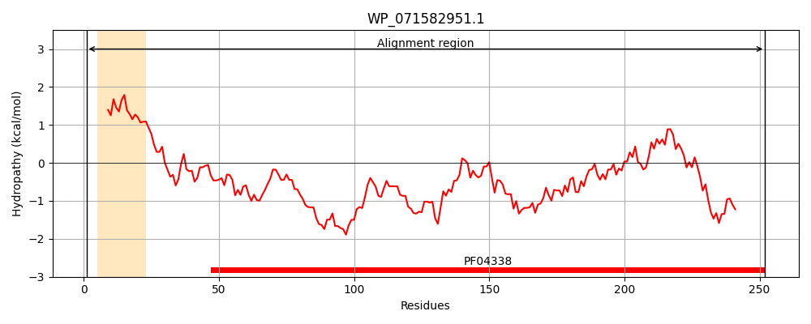
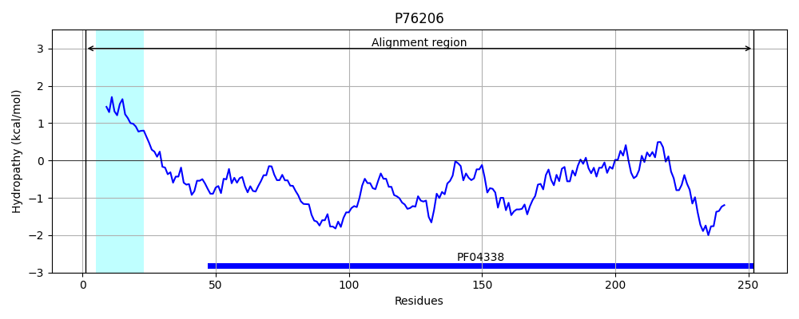
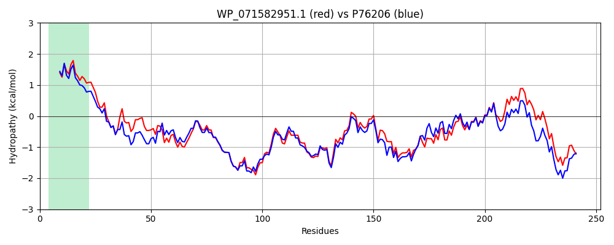

Hit Accession: P76206
Hit TCID: 1.B.75.1.3
Hit Description: gnl|BL_ORD_ID|11448 gnl|TC-DB|P76206|1.B.75.1.3 Uncharacterized protein YdiY OS=Escherichia coli (strain K12) GN=ydiY PE=4 SV=1
Mach Len: 252
e:0.000000
Query TMS Count : 1
Hit TMS Count: 1
TMS-Overlap Score: 0.950000
Predicted Substrates:CHEBI:25367;molecule
BLAST Alignment:
Score: 1158 , Bit scores: 450 bits, E-value: 6.8e-163, Alignment length: 252, Percentage identity: 84
Query: 1 MKLLKTVPAAVMLAGGLFASVGAMADDSVFTVMDDPSAAKKPFEGVVNAGYLAQSGNTKNSSMTADSTLTWYGNTTAWSLWGNASNTSSNDERSSEKYALGGRSRYNLTDMNYIFGQGSWLTDRYNGYQQRDVLTAGYGRQILNGPVHSLRFEFGPGVRYDEFTDGDTDTQPLGYASGTWAWQMTDNAKFTQGVSVFGAEDTTVNSESALNVAINAHFALKVAYNVTWNSAPPSSAPEHTDRRTSLSLGYKM 252
MKLLKTVPA VMLAGG+FAS+ A ADDSVFTVMDDP++AKKPFEG +NAGYLAQSGNTK+SS+TAD+T+TWYG+TTAWSLWGNASNTSSNDERSSEKYA GGRSR+NLTD +Y+FGQ SWLTDRYNGY++RDVLTAGYGRQ LNGPVHS RFEFGPGVRYD++TD ++TQPLGYASG +AWQ+TDNAKFTQGVSVFGAEDTT+NSESALNVAIN HF LKVAYNVTWNS PP SAPEHTDRRT+LSLGY M
Sbjct: 1 MKLLKTVPAIVMLAGGMFASLNAAADDSVFTVMDDPASAKKPFEGNLNAGYLAQSGNTKSSSLTADTTMTWYGHTTAWSLWGNASNTSSNDERSSEKYAAGGRSRFNLTDYDYLFGQASWLTDRYNGYRERDVLTAGYGRQFLNGPVHSFRFEFGPGVRYDKYTDNASETQPLGYASGAYAWQLTDNAKFTQGVSVFGAEDTTLNSESALNVAINEHFGLKVAYNVTWNSEPPESAPEHTDRRTTLSLGYSM 252 | Protein Hydropathy Plots: |
|---|
|  |  |
Pairwise Alignment-Hydropathy Plot:
|
|---|
|  |